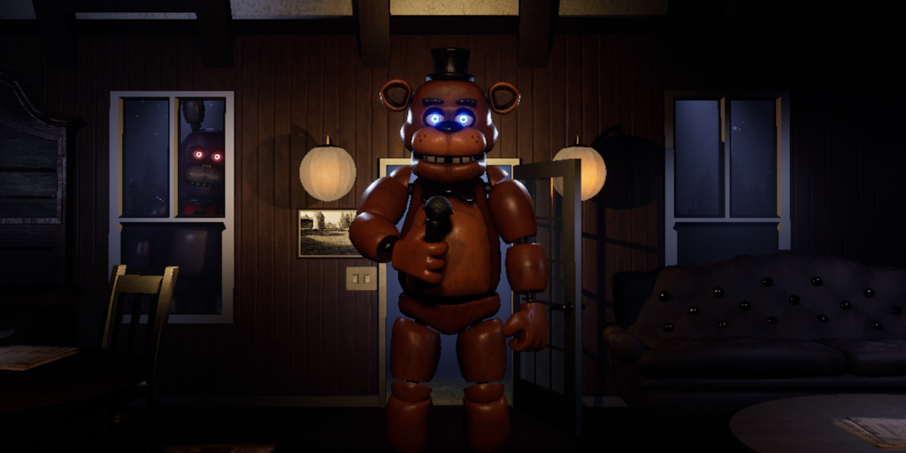
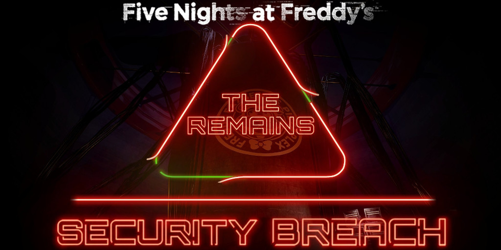
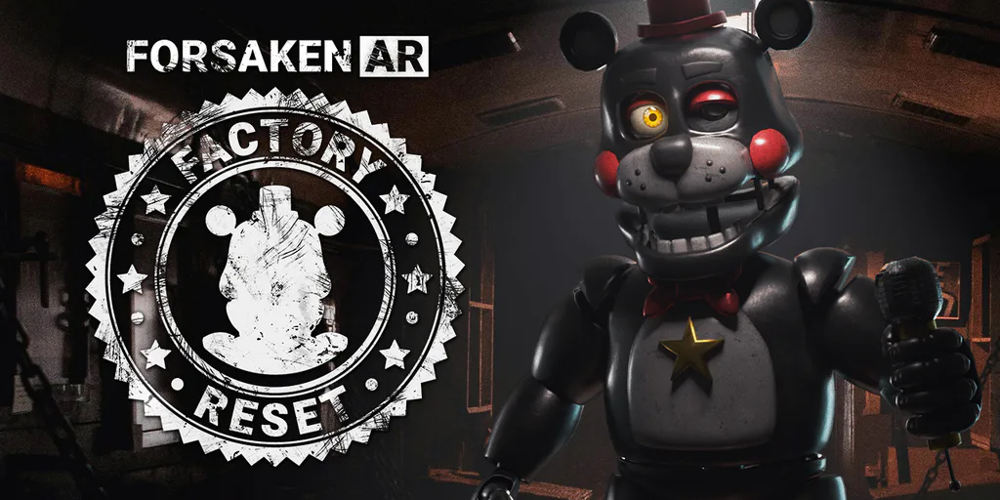

A fan-made Unreal Engine 4 adaptation of Illumix’s now sunset "Five Nights at Freddy’s AR: Special Delivery". The project is still in active development.

A mod of Steel Wool Studio's "Five Nights at Freddy's: Security Breach" that aims to add back most content that was cut before its launch.

A fan-made mod of Illumix's "Five Nights at Freddy's AR: Special Delivery" that is continuing it's legacy.